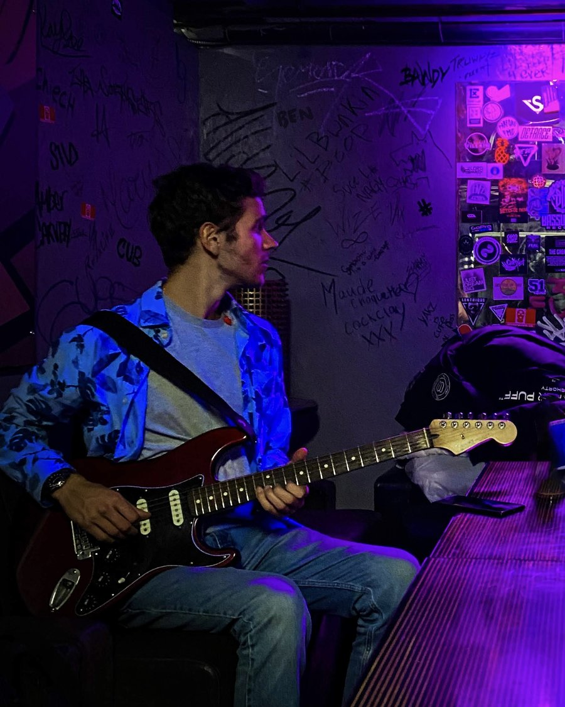

Composer and instrumentalist working with recorded and generated sounds.
Mat Di Pizzo is inspired by French chanson, bossa nova, West African rhythm, and New Orleans blues, and is educated in classical & academic music tradition.
Experienced in composing for the stage: music for an adaptation of Le Dieu du Carnage, music for original works Wagon 32, and in writing music and sound design for audio fictions and poetry projects.
Currently based between Argentina, France and Canada. Open to scoring work, commissions, and collaboration.
Works
Reels
Contact
Scoring work, commissions, and collaborations welcome.
hello@matdipizzo.com